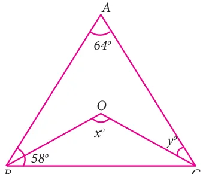
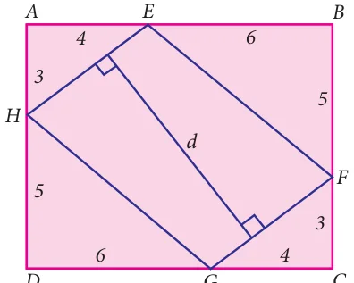

In a parallelogram ABCD , P and Q are the points on line DB such that \(PD = BQ\) show that APCQ is a parallelogram
Solution
ABCD is a parallelogram.
\(OA = OC\) and \(OB = OD\) (aDiagonals bisect each other)
now \(OB + BQ = OD + DP\)

\(OQ = OP\) and \(OA = OC\)
APCQ is a parallelogram.

- The angles of a quadrilateral are in the ratio 2 : 4 : 5 : 7. Find all the angles. angles are \(2x - 10\) and \(x + 4\). Find the value of \(\angle \angle x\) and the measure of all the angles. \(\angle\)
- In a quadrilateral ABCD, \(A = 72 ^{\circ}\) and C is the supplementary of A. The other two find \(OBC \angle\)
- The lengths of the diagonals of a Rhombus are 12 cm and 16 cm . Find the side of the \(\angle\)
- ABCD is a rectangle whose diagonals AC and BD intersect at O. If \(OAB =46 ^{\circ}\) , rhombus.
- Show that the bisectors of angles of a parallelogram form a rectangle .
- If a triangle and a parallelogram lie on the same base and between the same parallels, then prove that the area of the triangle is equal to half of the area of parallelogram.
- Iron rods a, b, c, d,

e, and f are making a design in a bridge as shown in the figure. If a || b , c || d , e || f , find the marked angles between
- b and c
- d and e (iii d and f
- c and f Fig. 4.38
\(\angle \angle\)
\(\angle \angle\)
- In the given Fig. 4.39, \(A = 64 ^{\circ}\) , \(ABC = 58 ^{\circ}\) . If BO and CO

are the bisectors of ABC and ACB respectively of ΔABC,
find \(x ^{\circ}\) and \(y ^{\circ}\)

- In the given Fig. 4.40, if \(AB = 2\), \(BC = 6\), \(AE = 6\),
\(BF = 8\), \(CE = 7\), and \(CF = 7\), compute the ratio of the area of quadrilateral ABDE to the area of ΔCDF. (Use congruent property of triangles).

- In the Fig. 4.41 , ABCD is a rectangle and EFGH is a parallelogram. Using the measurements given in the figure, what is the length d of the segment that is perpendicular to HE and FG ?
- In parallelogram ABCD of the accompanying diagram, line DP is drawn bisecting BC at N and
meeting AB (extended) at P. From vertex C, line CQ is drawn bisecting side AD at M and meeting AB (extended) at Q. Lines DP and CQ meet at O. Show that the area of triangle QPO is \(\frac{9}{8}\) of the area of the parallelogram ABCD.